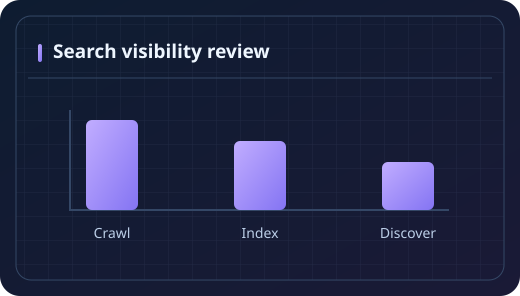
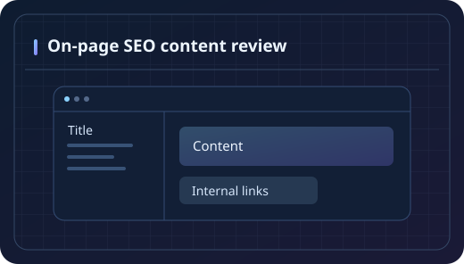
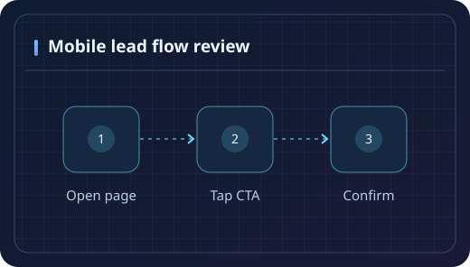
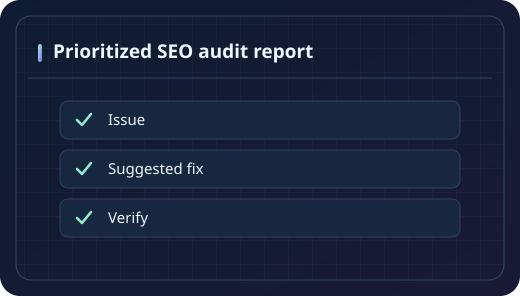

SEO & Website Optimization
Help customers find the right page and make it easier for them to take the next step. Start with a review of your important pages, search visibility and mobile experience.
Find out what is holding pages back
Start with the pages that matter to the business. For a service site, that might be the homepage, two main service pages and the quote form. For a store, it might be the collections and products that bring in most orders. We review how visitors reach those pages and whether the pages make the next step clear.
A technical review can look at response codes, redirect chains, canonical URLs, sitemap entries and indexing signals. With Search Console access, we can compare the pages you want indexed with the pages Google reports. Share a URL and any recent redesign or migration so it’s easier to interpret what changed.

Improve page content and internal links
Compare what the page promises in its title and heading with what a customer actually finds. For example, a Shopify development page should explain what is included, what you need before starting and how to request a quote. Use relevant terms naturally and link to the next useful resource, such as your pricing, examples or launch checklist.
For a growing site, agree on one clear purpose for each page. Update overlapping pages when they answer the same question. If a page needs a new address, map its old URL to the closest useful destination and update internal links.

Check mobile experience and lead flow
Test a few representative pages on mobile. Watch for large images, layout shifts and controls that are hard to use. Follow the real inquiry or checkout flow and verify what happens after submission. Speed and usability fixes should help visitors complete the task the page is built for.
For a site that also runs paid ads, check whether campaign landing pages match their offers and have a working conversion path. Keep campaign tracking and organic search measurement distinct so each can be reviewed on its own terms.

What you get from the review
The outcome is a prioritized list of affected pages, the issue found, a proposed fix and a way to verify it. We can agree separately which fixes Webnox should implement. For example, a redirect repair, a clearer service heading and a mobile form adjustment are three different tasks with different checks.
Bring your website URL, the services or products you want customers to find, and the markets you care about. If you have Search Console data, share it through account access or an export. A starting measurement gives you something to compare after the changes roll out.

FAQ
Can you review a website you didn’t build?
Yes. Share the live URL, the pages you want to improve and details of any recent changes. We can review public pages first and discuss what access would help.
Can you guarantee a position in Google?
Search rankings vary. The review identifies work we can scope and verify, such as crawl issues, unclear page content or broken internal links.
Does the audit include implementation?
The review and implementation are scoped separately. Once you have a list of fixes, we can discuss which ones to tackle first and how to confirm they’re working.
Bring Your Website to an Audit
Share your URL and one outcome you want to improve, such as more qualified inquiries or a smoother mobile checkout.